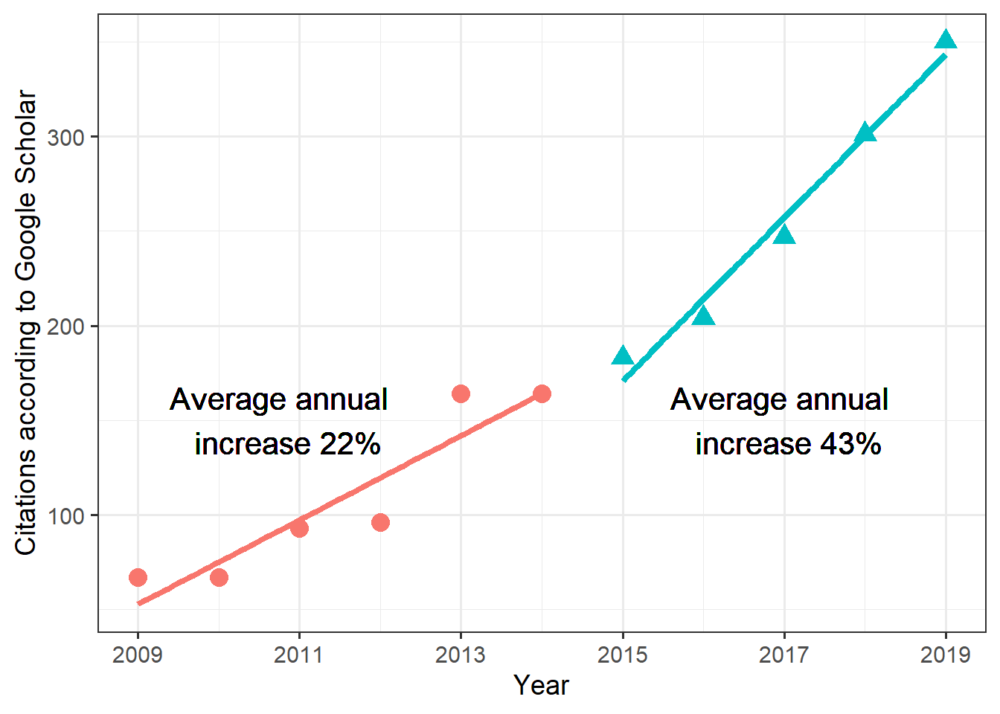

library(scholar)
library(dplyr)
library(tidyr)
library(knitr)
library(ggplot2)Using R to analyze publications - part 1
Some examples using Google Scholar
R
Data Analysis
bibliometrics
Some code and examples showing how to process and analyze meta-data for a set of publications using the scholar R package.
Overview
I needed some information on all my publications for “bean counting” purposes related to preparing my promotion materials. In the past, I also needed similar information for NSF grant applications.
Instead of doing things by hand, there are nicer/faster ways using R. The following shows a few things one can do with the scholar package. I describe an alternative approach using the bibliometrix package in part 2 of this post.
Notes
As of this writing, the
scholarR package seems semi-dormant and not under active development. If Google changes their API for Scholar and the package isn’t updated, the below code might stop working.A problem I keep encountering with Google Scholar is that it starts blocking requests, even after what I consider are not that many attempts to retrieve data. I notice that when I try to pull references from Google Scholar using
JabRefand also with the code below. If that happens to you, try a different computer, or clear cookies. This is a well known problem and if you search online, you find others complaining about it. I haven’t found a great solution yet, other than not using the Google Scholar data. I describe such an approach in part 2 of this post. However, some analyses are only able with Google Scholar information.To minimize chances of getting locked out by Google, I wrote the code below such that it only sends a request if there isn’t a local file already containing that data. To refresh data, delete the local files.
Required packages
Get all citations for an individual
First, I’m using Google Scholar to get all citations for a specific author (in this case, myself).
#Define the person to analyze
scholar_id="bruHK0YAAAAJ"
#either load existing file of publications
#or get a new one from Google Scholar
#delete the file to force an update
if (file.exists('citations.Rds'))
{
cites <- readRDS('citations.Rds')
} else {
#get citations
cites <- scholar::get_citation_history(scholar_id)
saveRDS(cites,'citations.Rds')
}Compare citations for different time periods
For my purpose, I want to compare citations between 2 time periods (my Assistant Professor time and my Associate Professor time). I’m splitting them into 2. I’m doing this analysis at the beginning of 2020 and want only full years. The code snippets below give me what I need, two time periods 2009-2014 and 2014-2019.
period_1_start = 2009
period_2_start = 2015
cites_1 <- cites %>% dplyr::filter((year>=period_1_start & year<period_2_start ))
#remove last year since it's not a full year
cites_2 <- cites %>% dplyr::filter((year>=period_2_start & year<2020 )) Fitting a linear model to both time segments to look at increase in citations over both periods.
fit1=lm(cites ~ year, data = cites_1)
fit2=lm(cites ~ year, data = cites_2)
inc1 = fit1$coefficients["year"]
inc2 = fit2$coefficients["year"]
print(sprintf('Annual increase for periods 1 and 2 are %f, %f',inc1,inc2))[1] "Annual increase for periods 1 and 2 are 22.257143, 43.100000"Making a figure to show citation count increases
# combine data above into single data frame
#add a variable to indicate period 1 and period 2
cites_1$group = "1"
cites_2$group = "2"
cites_df = rbind(cites_1,cites_2)
xlabel = cites_df$year[seq(1,nrow(cites_df),by=2)]
#make the plot and show linear fit lines
p1 <- ggplot(data = cites_df, aes(year, cites, colour=group, shape=group)) +
geom_point(size = I(4)) +
geom_smooth(method="lm",aes(group = group), se = F, size=1.5) +
scale_x_continuous(name = "Year", breaks = xlabel, labels = xlabel) + scale_y_continuous("Citations according to Google Scholar") +
theme_bw(base_size=14) + theme(legend.position="none") +
geom_text(aes(NULL,NULL),x=2010.8,y=150,label="Average annual \n increase 22%",color="black",size=5.5) +
geom_text(aes(NULL,NULL),x=2017,y=150,label="Average annual \n increase 43%",color="black",size=5.5) Warning: Using `size` aesthetic for lines was deprecated in ggplot2 3.4.0.
ℹ Please use `linewidth` instead.#open a new graphics window
#note that this is Windows specific. Use quartz() for MacOS
ww=5; wh=5;
windows(width=ww, height=wh)
print(p1)`geom_smooth()` using formula = 'y ~ x'
dev.print(device=png,width=ww,height=wh,units="in",res=600,file="citations.png")png
2 Getting list of publications
Above I got citations, but not publications. This function retrieves all publications for a specific author and returns it as a data frame.
#get all pubs for an author (or multiple)
if (file.exists('publications.Rds'))
{
publications <- readRDS('publications.Rds')
} else {
#get citations
publications <- scholar::get_publications(scholar_id)
saveRDS(publications,'publications.Rds')
}Quick peek at publications
glimpse(publications)Rows: 90
Columns: 8
$ title <fct> "Severe outcomes are associated with genogroup 2 genotype 4 no…
$ author <fct> "R Desai, CD Hembree, A Handel, JE Matthews, BW Dickey, S McDo…
$ journal <fct> "Clinical infectious diseases", "BMC public health", "Journal …
$ number <fct> "55 (2), 189-193", "11 (S1), S7", "7 (42), 35-47", "3 (12)", "…
$ cites <dbl> 163, 158, 129, 124, 123, 115, 105, 89, 71, 71, 55, 53, 52, 49,…
$ year <dbl> 2012, 2011, 2010, 2007, 2006, 2012, 2006, 2017, 2016, 2008, 20…
$ cid <fct> 1979732925283755485, 10982184786304722425, 1038596204985444772…
$ pubid <fct> 5nxA0vEk-isC, _FxGoFyzp5QC, 9yKSN-GCB0IC, d1gkVwhDpl0C, u5HHmV…This shows the variables obtained in the data frame. One thing I notice is that this contains more entries than I have peer-reviewed publications. Since most people’s Google Scholar profile (including my own) list items beyond peer-reviewed journal articles, one likely needs to do some manual cleaning before analysis. That is not ideal. I’ll do/show a few more possible analyses, but decided to do the analyses below using the approach in part 2.
Making a table of journals and impact factors
This used to work, but as of 2022-09-10 when I tried to re-run, it failed. Seems like get_impactfactor() doesn’t exist anymore. Maybe they got in trouble with the owners of ImpactFactor? Leaving it here, but code chunk below doesn’t run.
The scholar package has a function that allows one to get impact factors for journals. This data doesn’t actually come from Google Scholar, instead the package comes with an internal spreadsheet/table with impact factors. Looking a bit into the scholar package indicates that the data was taken from some spreadsheet posted on ResearchGate (probably not fully legal). Either way, let’s give it a try.
#here I only want publications since 2015
pub_reduced <- publications %>% dplyr::filter(year>2014)
# my guess is they got in trouble with the owners of ImpactFactor?
ifdata <- scholar::get_impactfactor(pub_reduced$journal)
#Google SCholar collects all kinds of 'publications'
#including items other than standard peer-reviewed papers
#this sorts and removes some non-journal entries
iftable <- ifdata %>% dplyr::arrange(desc(ImpactFactor) ) %>% tidyr::drop_na()
knitr::kable(iftable)OK so this doesn’t quite work. I know for instance that I didn’t publish anything in Cancer Journal for Clinicians and the 2 Rheumatology entries are workshop presentations. Oddly, when I look at publications$journal there is no Cancer Journal listed. Somehow this is a bug created by the get_impactfactor() function. I could fix that by hand. The bigger problem is what to do with all those publications that are not peer-reviewed papers. I could remove them from my Google scholar profile. But I kind of want to keep them there since some of them link to useful stuff. I could alternatively manually clean things at this step. This somewhat defeats the purpose of automation.
Discussion
While the scholar package has some nice features, it has 2 major problems:
- Google blocking the script if it decides too many requests are made (that can happen quickly).
- Since most people’s Google Scholar profile (including my own) list items beyond peer-reviewed journal articles, one likely needs to do some manual cleaning before analysis.
I do keep all my published, peer-reviewed papers in a BibTeX bibliography file in my reference manager (I’m using Zotero and/or Jabref). I know that file is clean and only contains peer-reviewed papers. Unfortunately, the scholar package can’t read in such data. In part 2 of this post series, I’ll use a different R package to produce the journal and author tables I tried making above.
The one feature only available through Google Scholar is the citation record and the analysis I did at the beginning if this post.